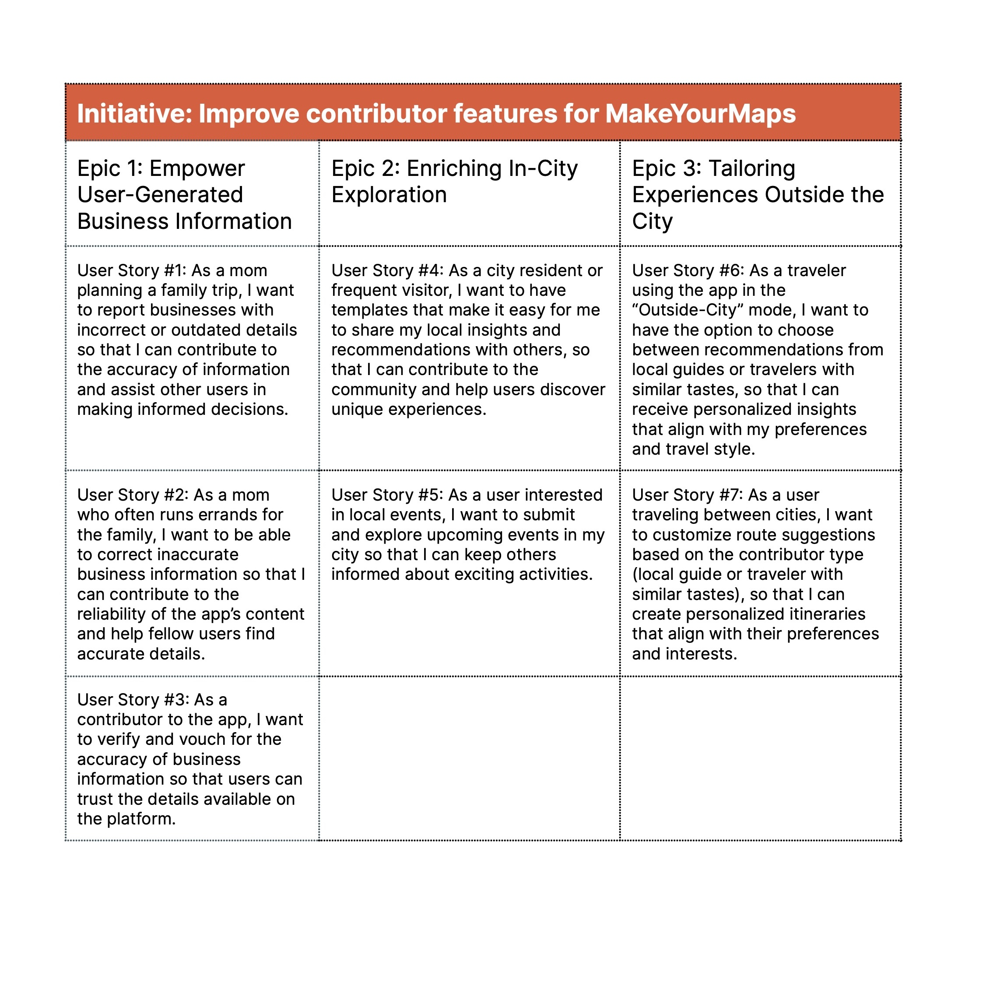
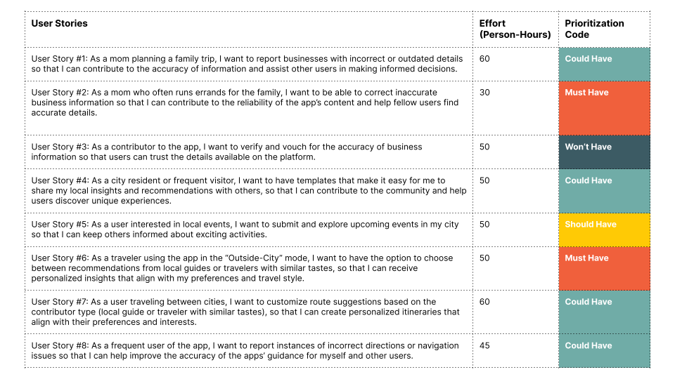
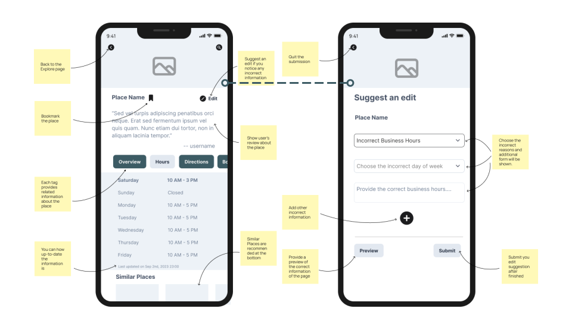
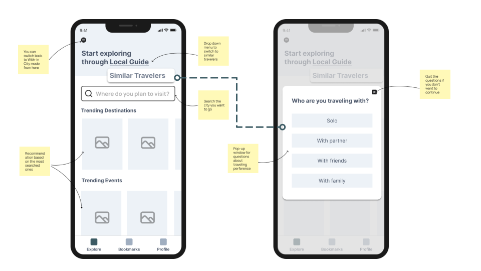
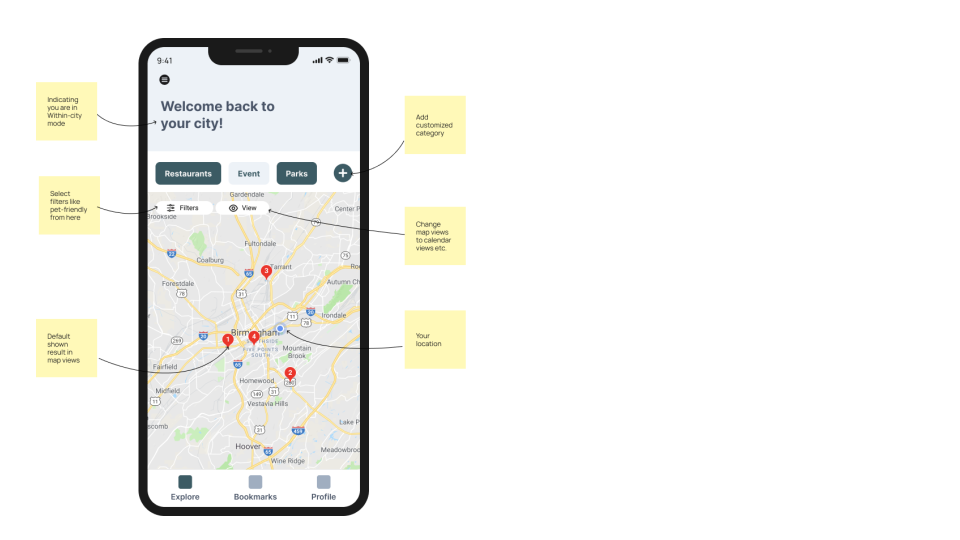

Purpose and Context
This project is a fundamental component of my Product Management Bootcamp at CareerFoundry.
It centers around the concept of "MakeYourMap," a fictional company catering to both B2B and B2C markets, akin to the popular Google Maps platform. The project provides a comprehensive and hands-on learning experience for me to hone product management skills by working on real-world scenarios and challenges.
Objective
To research, design, and build product improvement to create user-generated content in a mapping app named MakeYourMap as the new product manager who just joined the team a week ago.
Duration
3 weeks project for Introduction to Product Management Course
Tools/Methodologies
Ideation
We researched to gather insights from potential contributors to enhance the contributor features. We interviewed 6 participants who regularly use or express interest in local guide apps. Here are the findings and insights of the research:

Based on the insights, we suggested some features and prioritized two features by the Action Priority Matrix:
Define the Feature
After defining the two features, we are breaking down the features into epics and user stories by Agile Methodology.
User Stories Validation and Prioritization
After defining the user stories, we conducted a survey and user interviews to validate them. Here are the findings and insights of the research:
Therefore, we have decided to pause on user story#3 because it is not validated. We also noticed that many users were having trouble with the wrong direction, so we added a new story to fix that issue.
Then we prioritized the user stories in the Must Have and Should Have categories using the MoSCoW approach.
Visualize Product Improvement Ideas
After prioritizing the user stories, we visualized the ideas by creating low-fi wireframes.
User Story #2
As a mom who often runs errands for the family, I want to be able to correct inaccurate business information so that I can contribute to the reliability of the app’s content and help fellow users find accurate details.
User Story #6
As a traveler using the app in the “Outside-City” mode, I want to have the option to choose between recommendations from local guides or travelers with similar tastes, so that I can receive personalized insights that align with my preferences and travel style.
User Story #5
As a user interested in local events, I want to explore upcoming events in my city so that I can plan my activities and attend events that align with my interest and schedule.
Get buy-in
Present our product improvement ideas about the Crowdsourced Updates feature no longer than 10 minutes to the CPO as part of an executive-level product review.